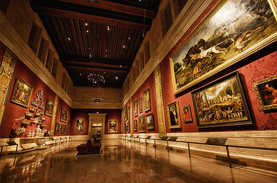
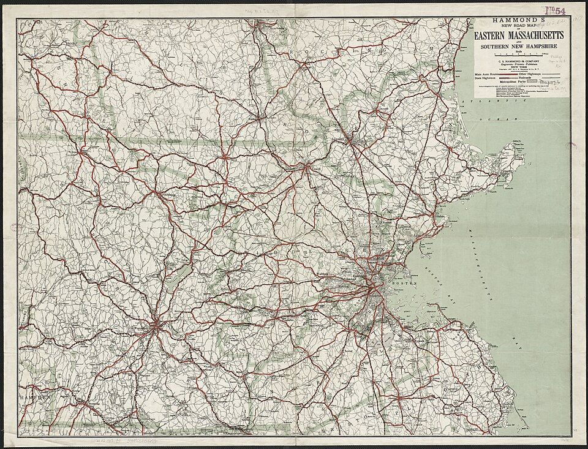

About Me
Contact Info
Primary Email: oryan862@gmail.com
Univ. Email: ryanoconnell@umass.edu
Phone: 617-548-6552
Career interests
After graduation, I would like to explore the field of public history by working in museums and archives. I found this interest through choosing my major in my second year and seeing the career path History majors take. A year later, I took a few classes that specialized in historical writing (historiography). It was interesting to see how narratives can change and the attempts made to educate people about the past outside of the classroom.

More info about me
My hobbies include playing guitar, watching movies, and learning about US and Latin American history. On my resume, I wrote down how I am conversational in Spanish but I'm always want to expand my knowledge further. After undergrad, I plan to improve my spanish by practicing more in my hometown in Eastern Mass and traveling to Central America. I have also taken an intererst in learning Portuguese.
Where do I plan on staying after graduation?
As pictured on the left, I am from the Eastern portion of Massachusetts and would like to stay on the area but willing to relocate to anywhere within the North East.
Song Recommendations:
- Living la vida loca - Ricky Martin
- Kid Charlemagne - Steely Dan
- Baile Inolvidable - Bad Bunny
- Impacto - Enjambre
- Dream on - Aerosmith
